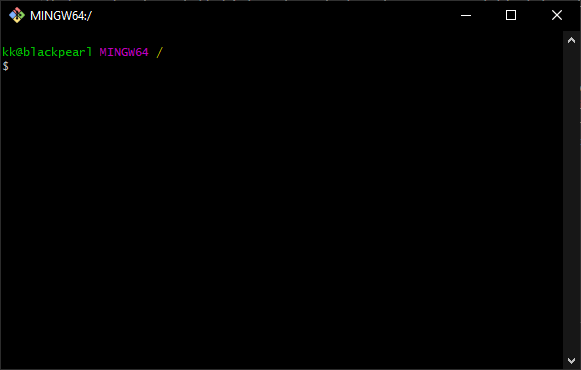
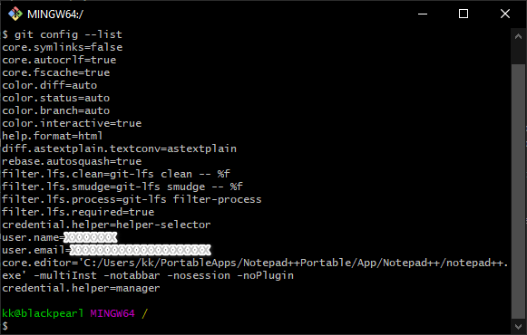
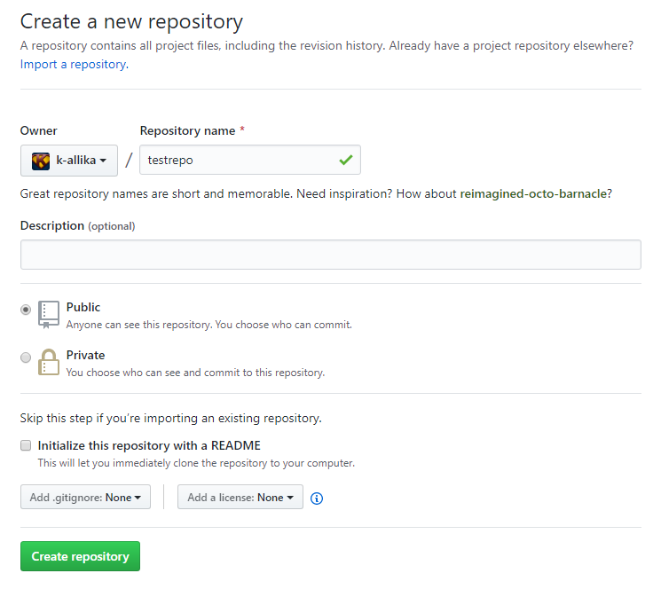
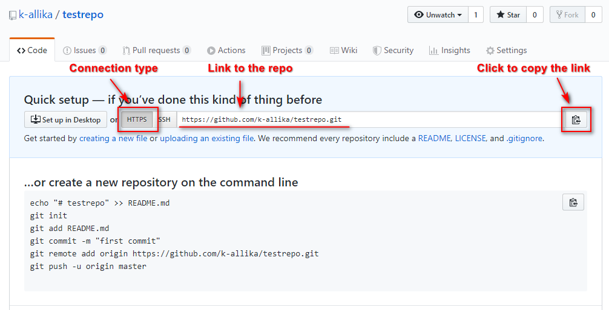
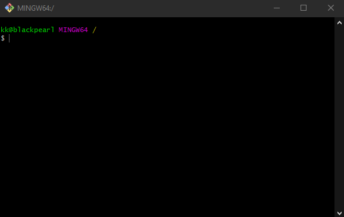
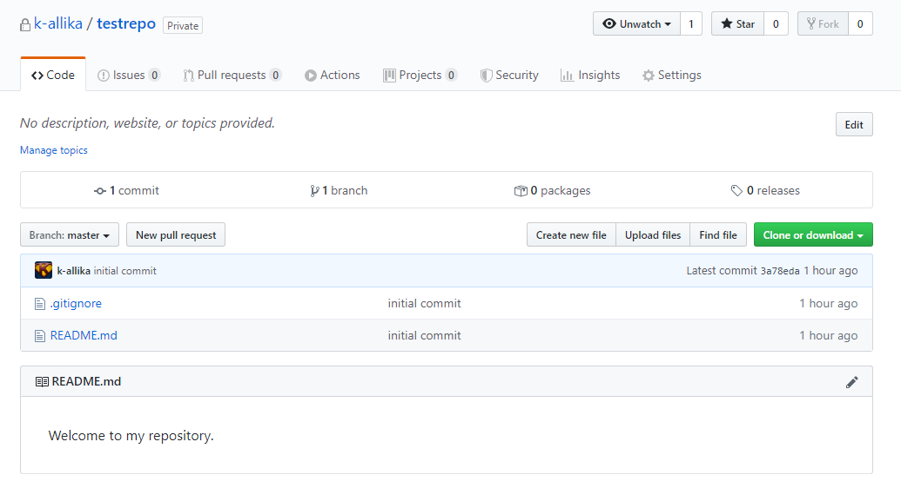

GitHub and Git basics
Installing Git ¶
Download and install Git for Windows from https://git-scm.com/download/win. You can install the regular version or the portable version of from the links on the page. By now, you might have guesed that I have installed the portable version.
[^top]
Connecting R Studio to GitHub ¶
JHU's Linking GitHub and RStudio document shows in detail how to connect R Studio to your GitHub account, create projects in repositories, commit and push repos. Hence, I am not going to go through that here. Also, I am not a big fan of using R Studio to perform Git operations. I believe that one needs to work on CLIs (like Git Bash) to learn and understand how Git versioning works.
[^top]
Git Bash ¶
Git Bash is a CLI(Command Line Interface) for Git operations for Git based online services like GitHub or GitLab. We have already installed Git earlier which contains an executable file called Git Bash. We will use Git Bash to connect to GitHub and perform Git operations.
1. Git Credential Manager for Windows (GCMW)¶
Git Bash can connect to Github via SSH or HTTPS. GitHub recommends HTTPS over SSH as the connections are much faster and easier to set up. To connect over HTTPS, we need to install Git Credential Manager for Windows (GCMW). GCMW provides secure Git credential storage for Windows with Two-factor authentication for GitHub. Download and install the latest GCMW from https://github.com/Microsoft/Git-Credential-Manager-for-Windows/releases/latest
2. Git Bash first time configuration¶
Here are a few things that you need to do when you first install Git. Open Git Bash and you'll see a CLI that looks like this.

1. Type the following command in Git Bash and enter your GitHub username (the one created while setting up the GitHub account) in quotes.
git config --global user.name "YourUserName"
2. Enter your email address associated with your GitHub account.
git config --global user.email abcdef@example.com
3. Configure your favorite text editor for Git Bash. If you installed portable Notepad++ like me, you can configure it as your default Git Bash text editor by typing the following. Edit Notepad++ path accordingly.
git config --global core.editor "'C:/Users/kk/PortableApps/Notepad++Portable/App/Notepad++/notepad++.exe' -multiInst -notabbar -nosession -noPlugin"
You can also check your settings by entering the following. If something's wrong, use the above commands to change them.
git config --list

3. Basic Git operations¶
Let's create a repository called "testrepo" and perform some basic Git operations on it. Login to GitHub and create the repository called "testrepo".

Ensure that the connection is HTTPS. Click copy button to copy the repo link.

Go to Git Bash and create a directory where you plan to work on your projects. Let's call it "projects".
mkdir projects
Enter the following command to view all files and directories in the current location. One of them should read "projects"
Change directory to "projects"
cd projects
git clone¶
Clone your repo to your current working directory.
git clone https://github.com/k-allika/testrepo.git
git remote¶
Check connection to your remote repo
git remote -v
.gitignore¶
.gitignore is an important file and should be created before the first push. .gitignore contains a list of files that git will ignore while performing git operations. For example, if I have some text files in my working directory that I do not want to push them to my GitHub repo, then I'll include *.txt in my .gitignore.
touch¶
Create an empty .gitignore file
touch .gitignore
vi¶
Edit an existing file or create a new file and edit.
vi .gitignore
adding *.txt to ignore will tell Git to ignore all txt files and not to push them to remote repo.
Basic vi commands:
i to start editing.
Esc to stop editing and come out of edit mode.
:w to save file.
:q to quit vi
Let's create a "notes.txt" file to test .gitignore. Since we added *.txt to .gitignore, "notes.txt" would not be pushed to the repo.
vi notes.txt
Let's create another file called "README.md". Since this file does not match anything in .gitignore, it would be pushed to the repo.
vi README.md
ls¶
ls lists files and directories in the current directory. The arguments -la will show file attributes along with hidden files.
ls -la
git status¶
View the status of your working directory compared to the remote repo at GitHub.
git status
As expected, you'll notice that only .gitignore and README.md files are mentioned in the status output. The notes.txt is ignore as it should.
git push¶
git push
Push changes in your working directory to the remote repo.

Check your repo at GitHub and you should see the changes there.

[^top]
Last updated 2020-04-13 22:32:36.916238 IST
Comments